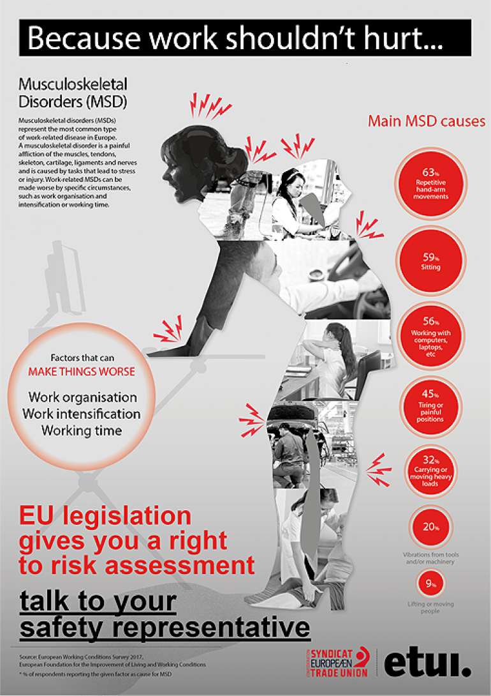

Introduction
Every day, whether in the office or the workshop, workers are exposed to risks they do not always perceive: screen-related fatigue, stress and psychological pressure, or physical ailments linked to their workstation.
This site aims to help you identify these high-risk situations and discover the right steps to protect yourself. Browse the information sheets below to learn more, and check the help page if you need a hand navigating the site.
Posters on the different types of risks



Different Risks
Working for long hours on a computer, laptop or tablet can cause tired eyes, headaches, neck pain and sore wrists or shoulders. This often happens when the screen is too high or too low, the chair is not adjusted, or you stay in the same position for too long.
Key figures:
- Up to 62% of people who work on screens report digital eye strain.
- More than 90% of intensive screen users report muscle or joint discomfort.
How to protect yourself:
- Place the top of the screen at eye level and about an arm’s length away.
- Keep your keyboard and mouse close so your wrists stay straight.
- Take a short break every hour and look far away for 20 seconds.
- Adjust your chair so your feet are flat on the floor and your back is supported.

Stress at work appears when there is too much pressure, not enough control, poor support or difficult relationships with colleagues or managers. It can make you feel anxious, tired, irritable or unable to sleep well. Over time it can also affect your physical health.
Key figures:
- 964,000 workers in Great Britain suffered from work-related stress, depression or anxiety in 2024/25.
- This caused 22.1 million lost working days.
- Stress represents 52% of all work-related ill health cases.

How to protect yourself:
- Talk early to your manager or a trusted colleague if you feel overwhelmed.
- Take real breaks and try not to work late every day.
- Write down what is causing the pressure and look for small changes.
- Ask for help or training if a task feels too difficult.
These are pains and injuries that affect muscles, joints, tendons or the back. They often come from repeating the same movements, staying in awkward positions, or using force for a long time. Common problems are back pain, stiff neck, sore shoulders or painful wrists.
Key figures:
- 511,000 workers suffered from work-related musculoskeletal disorders in 2024/25.
- This caused 7.1 million lost working days.
- 43% of cases affect the back and 41% affect the upper limbs or neck.

How to protect yourself:
- Change position regularly – do not stay sitting or standing still for too long.
- Keep tools and materials close to your body.
- Stretch gently during the day.
- Report any pain early so it does not become a long-term problem.
Lifting, carrying, pushing or pulling objects can hurt your back, shoulders or arms if done the wrong way – even when the load is not very heavy. The risk is higher when the load is awkward, when you twist your body, or when you lift from the floor or above shoulder height.

Key figures:
- Manual handling causes about 17% of all non-fatal workplace injuries.
- It is one of the main causes of back pain and other musculoskeletal disorders.
How to protect yourself:
- Plan the lift before you start.
- Bend your knees, keep your back straight and hold the load close to your body.
- Ask for help or use a trolley when the load is heavy or bulky.
- Store heavy items at waist height whenever possible.
Many workplaces use products that can be harmful if you breathe them, touch them, or get them in your eyes. Examples include cleaning products, solvents, paints, dusts or glues. These substances can irritate the skin, cause breathing problems, or create more serious health issues over time.
Key figures:
- About 6,000 new cases of work-related skin problems are reported each year.
- Around 22,000 new cases of breathing or lung problems linked to work occur every year.
- About 11,000 deaths each year are linked to past exposure to hazardous substances at work.
How to protect yourself:
- Read the label and safety instructions before using any product.
- Use the right gloves, glasses or mask when needed.
- Work in a well-ventilated area or use extraction systems.
- Wash your hands after handling chemicals and never eat or drink near them.
- Tell your supervisor if you feel any irritation or unusual symptoms.